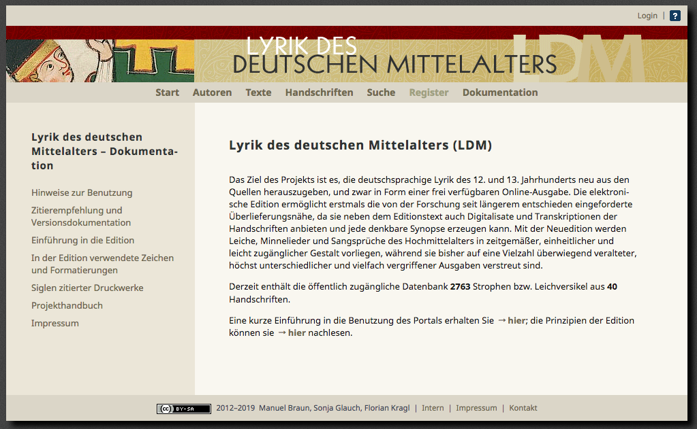
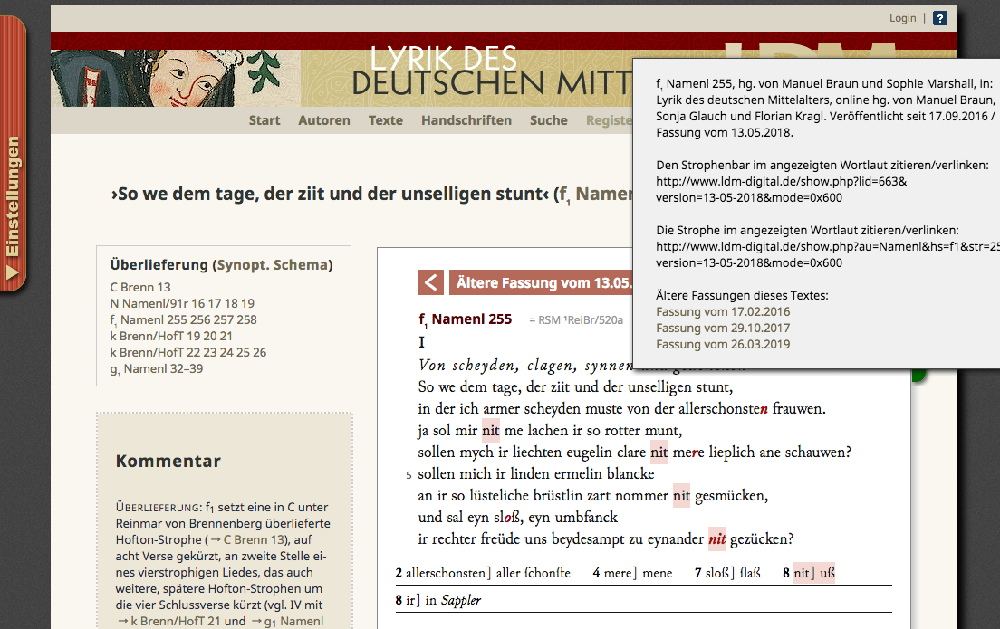
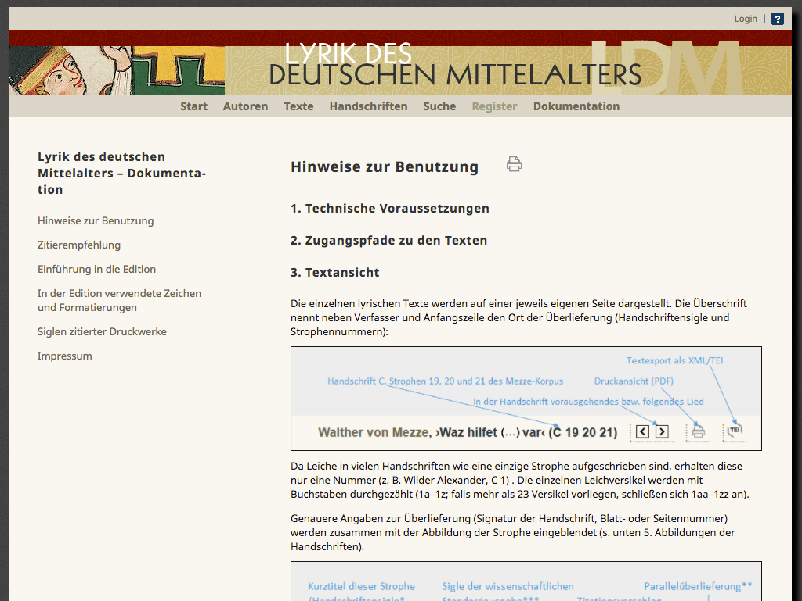
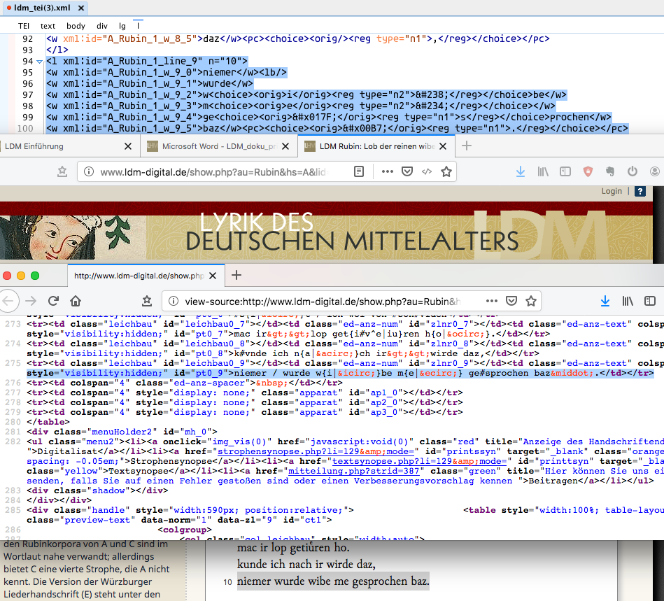
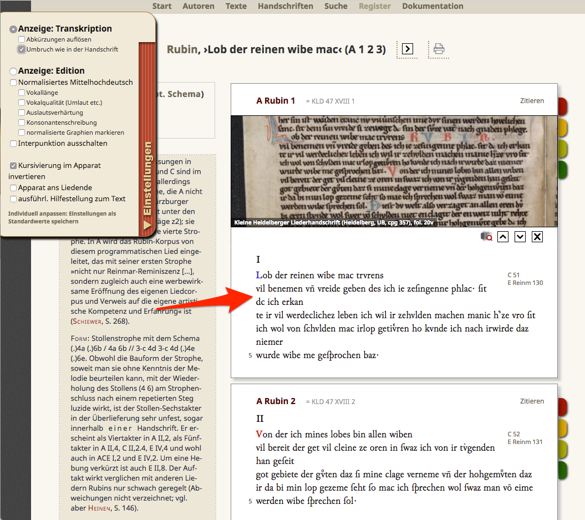
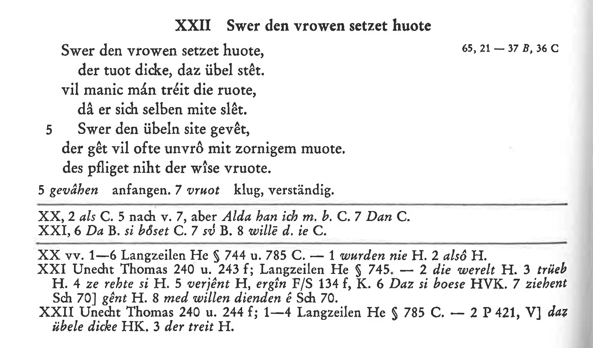

Lyrik des deutschen Mittelalters
Table of Contents
Abstract
The online anthology Lyrik des deutschen Mittelalters aims at bringing Middle High German poetry into the digital medium. In respect to editorial practice the text collection can without difficulty be matched to the old-established minnesong anthologies of German medieval studies. In its digital approach the project provides a sound text presentation which surpasses that of the print medium by far but often fails to embrace the more interesting aspects of the digital paradigm and digital humanities research as receiving the project data through reading remains the only access possible.
Introduction
In German medieval studies text collections have a long tradition. The introduction of the major anthologies like Minnesinger and Des Minnesangs Frühling dates back as far as the middle of the 19th century and earlier. The editors of these collections aimed at providing scholars as well as students with the best source text edition possible, continuously adapting the editorial standards over time. The editors of the Lyrik des deutschen Mittelalters (LDM for short) describe this development very aptly:
This statement also summarizes the editorial aim of the LDM, which puts its focus on both tradition and materiality but nonetheless concentrates on the two core editorial activities textual criticism in the scope of historic editions, and providing textual commentary for better access to the text itself. The scope of the text collection is as simple as challenging: to newly edit all poetic texts of the German High Middle Ages from its sources and provide them as an open access online edition (cf. home page) – in the introduction to the edition the editors describe their aim even more boldly:In medieval studies the belief in the possibility of regaining the author's text, or at least the archetype has declined in the same degree as the scholar’s/field's respect for the materiality of a manuscript has grown.
to newly edit all medieval German lyrical texts from their sources.
Background
The imprint lists Manuel Braun (University of Stuttgart), Sonja Glauch, Florian Kragl (both Friedrich-Alexander University Erlangen-Nürnberg) as project lead responsible for the LDM. The contact page names active as well as past staff members at both institutions with links to their professional webpages. Unfortunately, the web site provides only little information on the time scope, or the financing of the project: the icons in the footer of the web site suggest DFG-funding (unfortunately the footer disappears when clicking any other menu link), the author page lists two project terms. Florian Kragl’s institutional website (A side note: all the links to the personal websites of the editors in the ‚Kontakt‘ section of the website are invalid – a reminder why a permalink system should be used more frequently.) holds the information that the LDM text collection initiated in the DFG financed project Lyrik des hohen Mittelalters. Eine exemplarische elektronische Edition, 2013–15, and is now (2017–20) continued in the DFG project Lyrik des deutschen Mittelalters: Eine elektronische Edition des Minnesangs (cf. section ‚Projekte‘).
 
The LDM dares to take the edition of medieval German minnesong into a new medium. For this kind of anthologies there are only few preceding incidents: the most memorable probably is the electronic version of Minnesangs Frühling which provided the poems as utf-8 coded plain text files stored on a 3,5” floppy disk. The focus of the LDM therefore is primarily the editorial work, the aims of the project are clear cut:
When finished, the project will definitely provide a sound text basis of German medieval poetry, access will be furthered by the provision of the texts under a CC BY-SA license. To find out if the project data is also suitable for reusing will have to be seen once all results of the project are online.The aim of the project is to transfer this level of understanding [the text-theoretical and media-historical discussion concerning the transmission of minnesong] consequently into editorial practice. The means to achieve this is to replace the printed book with the electronic edition. Only the electronic edition allows for the processing of texts in their different transmissions in such a way that every user can be provided with exactly the synopsis that is currently needed.
Technical Aspects
The PHP driven website suggested, and the handbook confirms that all the data is stored annotated with proprietary markup in a mySQL database. The data is delivered via PHP to the user’s browser and can there be manipulated through javascript into different text versions. The handbook, which is part of a quite elaborate user documentation of the website and rather aimed at the project staff than the user, provides no details why this setup was chosen. In quite detail it discusses general and editorial decisions, outlines the transcription aims and the use of the proprietary markup, and more than once assures that the data can be provided in a TEI-XML compliant way. In the handbook the editors emphasize (p.39) that the proprietary markup and the working environment is only an internal means to publish TEI-XML data ready for digital preservation. How and based on which technologies this will be implemented, though, is not specified anywhere.

I personally support the idea of having a public project page with (sample) data online as soon as possible. But when following this course of project presentation (in contrast to having all the data and results online not until the end of the project) this process has to be thoroughly coordinated and explicitly communicated to the users. This could be done by either labelling the site ‘beta’ or rather by, and this is my personal preference, directly addressing the users, explaining the approach of step-by-step publication and only publishing content and interface elements that are really finished. The advantage is that the user has access to published and citable data and not to a scholarly dubious perpetual beta version. All this takes is a little interaction with the user and project management.
Since the beginning of 2018 the project team has been industriously
working on both data and web presentation. The number of stanzas nearly
quadrupled, there is the ‘Handbuch’
detailing the editorial work and supporting the project staff, and there finally
is a TEI-XML button providing XML code for each song. According to the handbook
(p.8f.) the database design centers around the song as central unit. On an upper
level songs are collected into author corpora, on a lower level songs consist of
stanzas which consist of lines which consist of words and punctuation. The
TEI-model follows this hierarchy by providing a <div>-element
for the song, <lg>-elements for the stanza, and so on. Each
element is identified through an @xml:id-attribute value which
probably is the basis for the text synopsis and parallel transmission (This is
most likely analyzed with the help of the database and not the XML.). Variants
of characters or character combinations or editorial changes below word or
punctuation level (<w>, <pc>) are encoded
with the <choice>-element, providing the form of the
manuscript (<orig>) or some kind of modified form
(<reg>: character normalization vs. editorial changes).
Text revisions are modelled with the elements from the TEI class model.pPart.transcriptional.
<g>-Element and a
reference to a detailed character declaration based on community standards, e.g.
the Medieval Unicode Font
Initiative character recommendation. With this approach the project
data is encoded more transparently. The overall gain for the domain would be a
common resource base (character description, fonts, etc.) as well as a common
ground for discussion with neighboring fields of research.
The downloaded TEI-XML is not valid, by the way, as the code is not
TEI compliant in the header. When using detailed markup (here:
<publisher>) in the various statements (here:
<publicationStm>) it is not possible to use general
elements like <p>. Either one uses general elements
(<p>, <ab>) with running text or
provides data that is modelled to detail. This has to be fixed, of course, but
the underlying rules are rather something that has to be discussed with the TEI
community at large than with the project staff.
Presenting the edited texts on a web site sure makes up an online resource (cf. project aims above) – Digital Scholarly Editions, though, should convey more of the digital paradigm and consider sustainability in form of re-usable data, persistent identifiers, and digital preservation scenarios. This is a serious shortcoming for a present-day digital edition project. Freely accessible research, meta data, and project data is not only increasingly called for by funding organizations, it improves any digitally oriented humanities project in many ways: it adds transparency and verifiability, improves data life span, allows for reuse of data – for both humans and machines –, in short, today it should be the common approach (cf. e.g. DFG 2015; Pierazzo 2016,195; Andorfer 2015; Rubow et al., 2015,28; Birnbaum et al. 2017,12). At the moment the project orientation is clearly towards reception through reading, this includes also the text collation views. Digital resources are limited to the XML-download of individual songs. To really provide data reusable in different settings there has to be more. Data downloads should provide at least the whole online corpus, and text collections for the individual authors, not just the individual songs. For different kinds of visualization (eg. chronological visualization of sources for songs according to dialect areas) it would also be useful to have access to the metadata on the texts and the historical manuscripts. Looking at the developments since early 2018 to the present day there is hope that more sources will be available at the end of the project term.
Using the LDM
All project data can be accessed via the main menu bar that not only opens different ways into the text collection (authors, texts, manuscripts, search) but also links to the project documentation. The core of the web site are, of course, the edited texts, which are accompanied by several pieces of additional information: diplomatic transcription, several apparatuses, text commentary, author information. The web site also links to and/or includes several external resources like manuscript images, manuscript description, research literature (Handschriftencensus and complementing literature collected in the course of the project). The texts and the additional data are presented through an intelligently designed user interface.
The available texts – presently the home page lists a count of 2754 stanzas edited from 39 manuscripts – are subdivided into author corpora (61 authors plus one section of texts handed down anonymously). The selection of the authors relates to the stages in the projects, where in the first term the complete opus of select authors (Dietmar von Aist, Friedrich der Knecht, Heinrich von Breslau, Leuthold von Seven, Regenbogen (early work), Reinmar von Brennenberg, Rubin, Walther von Mezze, Wilder Alexander) has been edited. The second term focuses on authors edited in the anthology Deutsche Liederdichter des 13. Jahrhunderts plus Konrad von Würzburg, Tannhäuser, and Heinrich von Veldeke. Select other authors were included to cover parallel transmission or were used as sample editions in the early project stages. (cf. ‘Autoren’) While the choice in selection for the second term can be reasonably followed, the selection process for the first remains unclear. There might be profound reasons for this selection, the web site itself does not provide further information. This lack of project documentation (also see above) is a major point of criticism, not only because the user is left in the dark concerning project status, development and plans but also because public funded projects should meet their obligations to provide information on progress, failures, and/or success. Models for successful project descriptions would for example be the respective web pages of the Alfred Escher Briefedition, the Codex Sinaiticus project, the Burckhardt Source project. As some of these projects have a larger volume than the LDM, simply providing the grant proposal would also be a suitable way to present the project in its overall scope.
The interface of the LDM is strikingly simple, intelligently designed, useful and user-friendly. The texts can be accessed in four different ways: author, text, and manuscript indices as well as a simple search form. While the indices provide alphabetically sorted lists of names, incipits and manuscript sigla (which in this context is a sound decision), the search function provides a full text search with truncation and manuscript restriction. Each index provides additional information: the author index shows the number of stanzas edited per author; the text index holds information on the source manuscript, the author corpus, and the (canonical) print edition; the manuscript index provides sigle, shelf mark, and number of edited stanzas for each manuscript.
Starting from the author index the names lead to an alphabetical list of incipits with information on manuscript, position of the stanza within the manuscript (provided in form of a manuscript specific stanza number instead of the folio specification, which would be the classical and probably more significant information in regard to the source), print edition and icons informing the user on the state of processing, ie. if digital images, transcription, edition, or commentary are available. The author page also provides an essay on the author and the transmission of his work, and parallel transmission. The user can modify the displayed list of entries via different selection boxes in regard to text type and manuscripts. The entries consequently lead to the text presentation. The manuscript page presents a core manuscript description as well as links to external sources. A very handy selector at the top of the page allows easy browsing through the manuscripts. A table holds the contents of the manuscript (folio, author and number of edited stanzas) as far as they are relevant for the project; the hyperlinks lead on to the author page. Irrespective of a user’s way into the depths of the text collection she can access the single texts once she has reached the list of incipits – the most direct way would be through the ‘Texte’ menu item.

Revisiting users can even store selected preferences (as cookies). A print icon opens a new page that allows some manipulation of the edited text and features a drop-out menu where the user can select the printing format. The PDF page is beautifully composed with a header providing the bibliographic information, columns holding the (synoptic) text representation, commentary, and a footer providing the licensing information. All in all, the PDF could well be a model of how a printer’s copy of an online edition should look like. All data is presented in color coded blocks, text blocks have additional sliders that either add information (e.g. manuscript viewer), lead to a new text display (stanza vs. text synopsis), or invite the user to participate (mail form for e.g. reporting errors). On the synopsis pages the user can re-order or delete the text blocks available and tweak the text presentation with the aforementioned preference menu. Unfortunately, the web design is not responsive, so that the reading experience on handheld devices is not acceptable. Since the web presentation conveys the impression that texts are primarily meant to be received this way, it is a general shortcoming.

Conclusion
The Lyrik des deutschen Mittelalters online text collection can without difficulty be matched to the old-established minnesong anthologies of German medieval studies. The web site provides a thoroughly thought out concept and a consistent as well as considerate design, comprehensible and scholarly sound edition principles, and core functions for textual criticism. In the scope of two project terms it is on the way to provide a substantial amount of digitally presented minnesong. The texts are available on an open access basis (CC BY-SA).
Unfortunately, there are shortcomings concerning up-to-date digital scholarly research: sporting the label ‘Digital Edition’ in the header of the web site might be somewhat premature. Many core elements of digital editions are missing (cf. e.g. Pierazzo 2016). To really embrace the advancements a digital editing project has to offer I expect to find comprehensive information on the overall project plan, the workflows, the technical infrastructure, the data model. The use of persistent identifiers is essential, as are institutionalized digital preservation strategies. A modern digital edition project should also provide reusable data, following the FAIR principles (cf. Wilkinson et al. 2016), which goes beyond the download of single XML files. Consequently the RIDE Criteria for Reviewing Scholarly Digital Editions should be applied:
Scholarly digital editions are not merely publications in digital form; rather, they are information systems which follow a methodology determined by a digital paradigm, just as traditional print editions follow a methodology determined by the paradigms of print culture.
The LDM in its present state is a respectable edition project that excels in visual data presentation and provides German medieval scholars and students with a sound text collection of digital minnesong. If the project implemented some of the aspects outlined above, it soon could be a show-case project for digital German medieval studies.
Bibliography
- Andorfer, Peter. 2015. Forschungsdaten in den (digitalen) Geisteswissenschaften: Versuch einer Konkretisierung. DARIAH-DE Working Papers 14. Accessed July 7 2020. http://webdoc.sub.gwdg.de/pub/mon/dariah-de/dwp-2015-14.pdf.
- Birnbaum, David J., Sheila Bonde, and Mike Kestemont. 2017. The Digital Middle Ages: An Introduction. In: Speculum, Supplement 2017, S. 1-38.
- DFG Guidelines on the Handling of Research Data. 2015. Accessed July 7 2020. http://www.dfg.de/download/pdf/foerderung/antragstellung/forschungsdaten/guidelines_research_data.pdf.
- Lachmann, Karl, and Moritz Haupt, ed. 1857. Des Minnesangs Frühling. Leipzig: Hierzel.
- Pierazzo, Elena, and Matthew James Driscoll. 2016. Digital Scholarly Editing. Theories and Practices. OpenBooks Publishers. Accessed July 7 2020. https://www.openbookpublishers.com/product/483.
- Putmans, Jean L., ed. 1993. EDV-Text von "Des Minnesangs Frühling". Göppingen: Kümmerle.
- Rubow, Lexi, Rachael Shen, and Brianna Schofield. 2015. Understanding Open Access: When, Why, & How to Make Your Work Openly Accessible. Authors Alliance Guides 2. Authors Alliance. Accessed July 7 2020. https://authorsalliance.org/wp-content/uploads/Documents/Guides/Authors%20Alliance%20-%20Understanding%20Open%20Access.pdf.
- Sahle, Patrick. 2014. Criteria for Reviewing Scholarly Digital Editions, version 1.1. Accessed July 7 2020. https://www.i-d-e.de/publikationen/weitereschriften/criteria-version-1-1/.
- von der Hagen, Friedrich Heinrich. 1838. Minnesinger. Deutsche Liederdichter des zwölften, dreizehnten und vierzehnten Jahrhunderts aus allen bekannten Handschriften und frühen Drucken. Leipzig: Barth.
- von Kraus, Carl, ed. 1978. Deutsche Liederdichter des 13. Jahrhunderts. 2. reviewed ed. by Gisela Kornrumpf. Tübingen: Niemeyer.
- Wilkinson, M., Dumontier, M., Aalbersberg, I. et al. 2016. The FAIR Guiding Principles for scientific data management and stewardship. In: Sci Data 3, 160018. https://doi.org/10.1038/sdata.2016.18.
Notes
- Translated from German by the author; original version: “Der Glaube an die Möglichkeit, den Autortext oder wenigstens den Archetypus wiedergewinnen zu können, ist der Mediävistik in dem Maße abhanden gekommen, wie ihr Respekt für die Materialität der Handschrift gestiegen ist”. ↑
- Translated from German by the author; original version: “[…] sämtliche lyrische Texte des deutschsprachigen Mittelalters neu aus den Quellen herauszugeben […]”. ↑
- Translated from German by the author; original version: “Diesen Erkenntnisstand konsequent in die Editionspraxis zu überführen, ist das Ziel des Projekts; das Mittel hierzu ist der Ersatz des gedruckten Buches durch die elektronische Edition. Nur diese ermöglicht es, die Texte in ihren unterschiedlichen Überlieferungszuständen so aufzubereiten, dass jedem Benutzer genau die Synopse an die Hand gegeben werden kann, die er gerade benötigt”. ↑
@article{ldm,
author = {Klug, Helmut W.},
title = {Lyrik des deutschen Mittelalters},
journal = {RIDE – A review journal for digital editions and resources},
number = {13},
year = {2020},
doi = {10.18716/ride.a.13.1},
url = {https://doi.org/10.18716/ride.a.13.1},
}TY - JOUR
AU - Klug, Helmut W.
TI - Lyrik des deutschen Mittelalters
T2 - RIDE – A review journal for digital editions and resources
IS - 13
PY - 2020
DA - 2020/12
DO - 10.18716/ride.a.13.1
UR - https://doi.org/10.18716/ride.a.13.1
PB - Institut für Dokumentologie und Editorik e.V.
LA - en
ER - Klug, H. W. (2020). Lyrik des deutschen Mittelalters. RIDE – A review journal for digital editions and resources, (13). https://doi.org/10.18716/ride.a.13.1Klug, Helmut W.. "Lyrik des deutschen Mittelalters." RIDE – A review journal for digital editions and resources, no. 13, 2020. https://doi.org/10.18716/ride.a.13.1.Klug, Helmut W.. "Lyrik des deutschen Mittelalters." RIDE – A review journal for digital editions and resources, no. 13 (2020). https://doi.org/10.18716/ride.a.13.1.